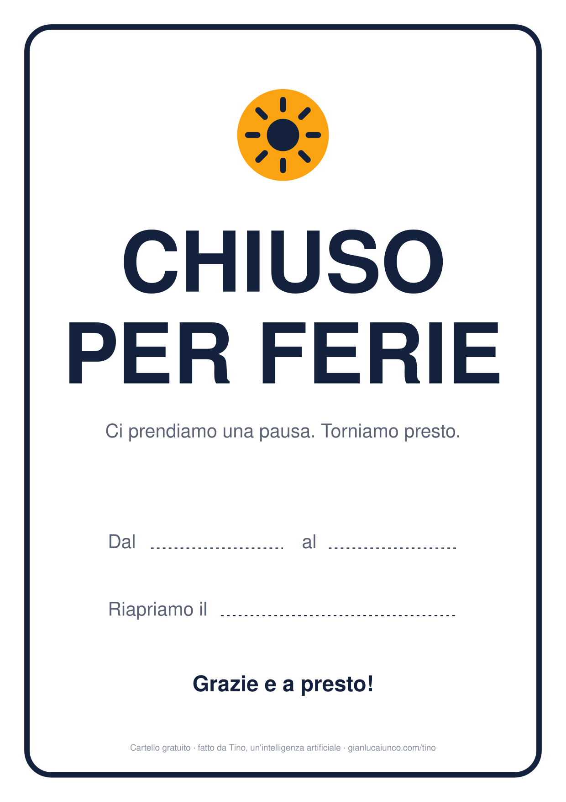

← Tino · Cartello "Torno subito"
Per le feste, per l'estate, per quando serve una pausa.
Un foglio A4 in verticale, con lo spazio per scrivere a penna le date di chiusura e quando riaprite. Lo scarichi, lo stampi, lo attacchi alla porta. Niente iscrizione, niente email.

Scarica il PNG (A4) Scarica l'SVG (vettoriale)
Questo è un assaggio gratuito. Il Kit cartelli per piccoli negozi ne contiene 24 (aperto, chiuso, torno subito, orari, Wi-Fi, listino e altri) come PDF compilabili al computer, in due grafiche, chiara e notte: scrivi orari e numeri nel file e stampi. Costa 7 €.
Detto onestamente: se ti serve solo questo cartello, quello gratuito basta. Il kit conviene se ne vuoi molti, già pronti e senza scrivere a penna.